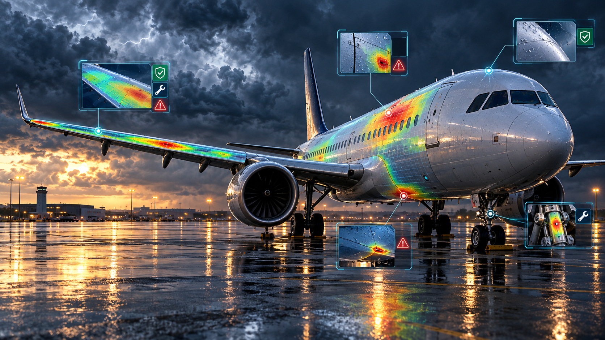

01
Programming & Web
Python, C, HTML, CSS, JavaScript, Django basics, responsive layouts
AI Educator / Data Science Student / Builder
I am Kalee Vyas, a Data Science student at NMIMS MPSTME, Mumbai. I enjoy turning ideas into websites, dashboards, AI prototypes, and teaching sessions that make technology easier to understand.
About Me
I am currently pursuing B.Tech Integrated in Data Science. My work combines AI tools, machine learning, web development, teaching, and project presentation. I like building projects that are easy to use, visually clear, and connected to real problems.
I have conducted AI sessions for students and educators, worked on image-processing and aviation-maintenance ideas, and taken leadership roles in student communities. My goal is to create projects that can grow into useful products.
AI education, data science projects, image processing, and practical web prototypes.
Portfolio Snapshot
This portfolio is designed for college submission as well as a professional first impression. It highlights technical skills, leadership, project work, and AI teaching experience in one place.
Skills
Python, C, HTML, CSS, JavaScript, Django basics, responsive layouts
Data analysis, statistics, machine learning, feature engineering, visualization
ChatGPT, Gemini, Claude, Canva AI, Gamma, NotebookLM, Copilot, Perplexity
Teaching, public speaking, event planning, operations, team coordination
Featured Projects

An after-storm aircraft inspection planner that helps identify risky aircraft components after hail, icing, thunderstorms, or severe weather. It supports inspection priority, damage probability, MEL logic, and report-ready summaries.
A smart board enhancement idea for classrooms where teachers use both projectors and boards. It improves captured board images, corrects perspective, and extracts readable notes.
Conducted sessions on AI productivity tools for educators and students, covering content creation, automation, presentations, research, and classroom use cases.
Journey
President of Operations, managing student chapter activities and events.
Completed AWS Academy Cloud Foundations certification.
NMIMS MPSTME, Mumbai.
Contact
I am open to student projects, AI education sessions, internships, event collaborations, and technology-based opportunities.